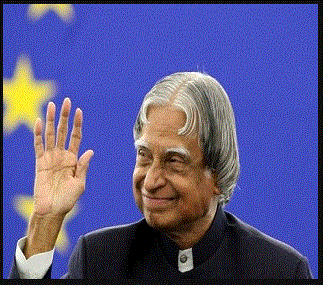

A. P. J Abdul Kalam

Great Indian Scientist and politician who played a leading role in the development of Indian's missile and nuclear weapons programs
About the Legend
- He was born on October 15,1931
- Served as the 11th President of India from 2002 to 2007
- Earned a degree in Aeronautical Engineering from Madras instituteof Technology
- Played a pivotal organisational,technical and political role in india's
- Rejoining DRDO in 1982 ,Kalam planned the program that produced a number of successful missiles,which helped earn him the nickname
Missile Man
Achievements
| year |
Award / Book |
| 1982 |
Bharat Ratna |
| 1985 |
Padma Bhushan |
| 2990 |
Padma Vibhushan |
| 2000 |
Wings of Fire |
| 2002 |
Missile Man Of India |
| 2005 |
India 2020 |
for more details click on the below button